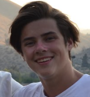
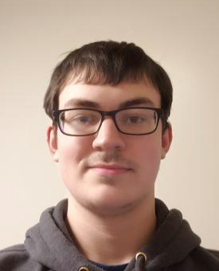
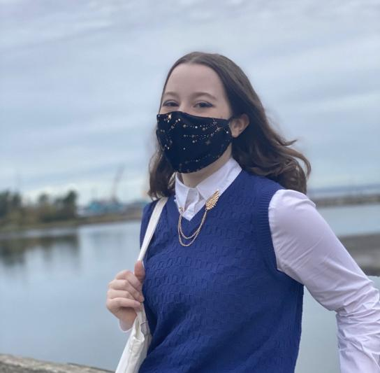
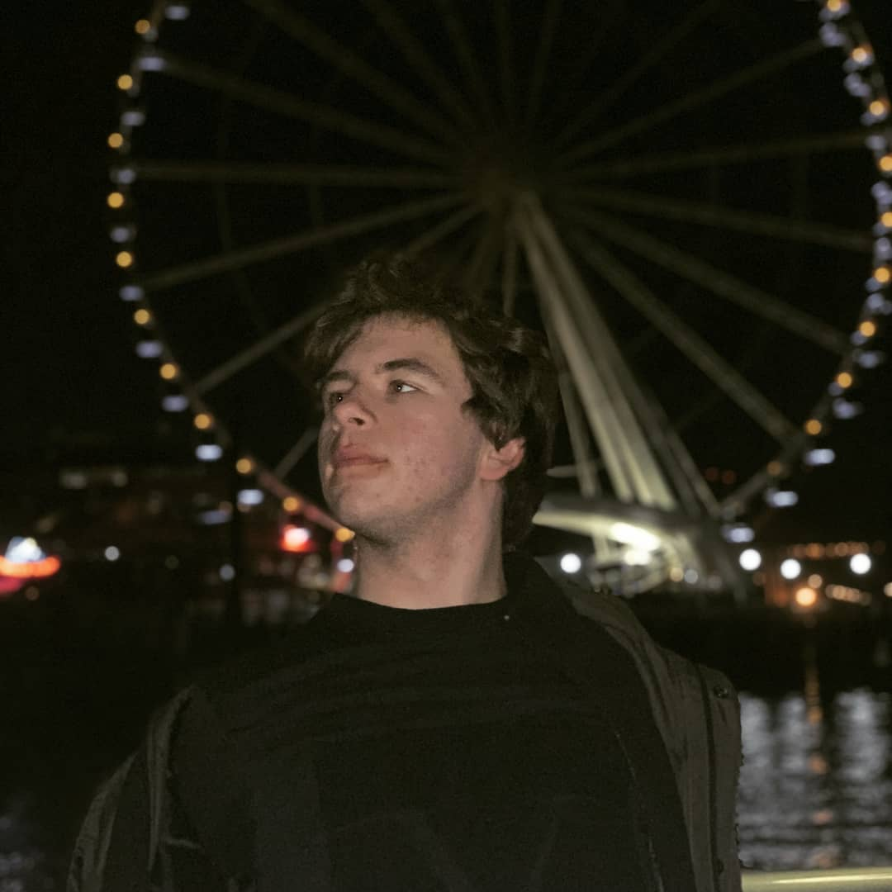

Hi I'm Zach, and I’m a transfer student from Chehalis Washington. I am majoring in Communications, and I love learning about Computer Science. For this project, I helped construct the narrative and assisted Connor who made the data visualizations.
My name is Connor Shields, I'm from Southern Washington and I plan to major to Computer Science. I worked on some of the data visualizations for the project and research on Amiri Baraka
My name is Cece, I’m a history major and a junior at western. I helped out with the research on this project and writing the narrative.
Hello! My name is Robert Zaitsev. I am currently a freshman here at Western and I am hoping to major in Music Composition. I helped with the coding of this site.
Hi, My name is Caleb Ponce and I'm a computer science student at Western Washington University. I hope you enjoyed our website! My part in this project was orginizing and coding the site while also helping with the visualizations.